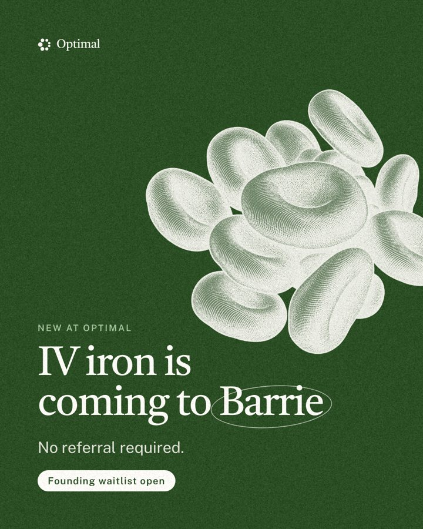
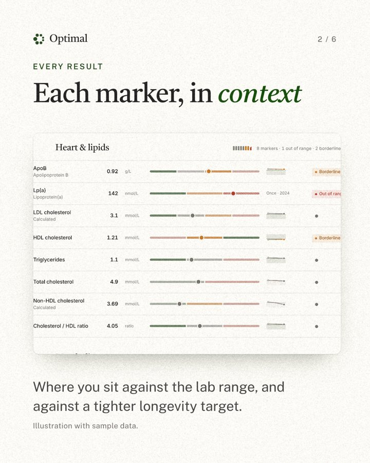
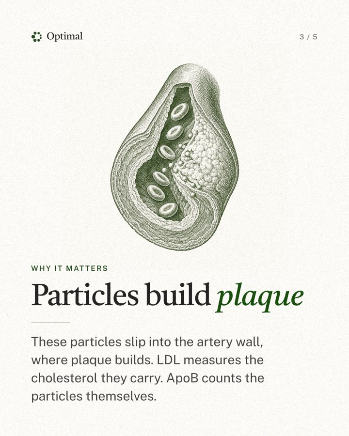
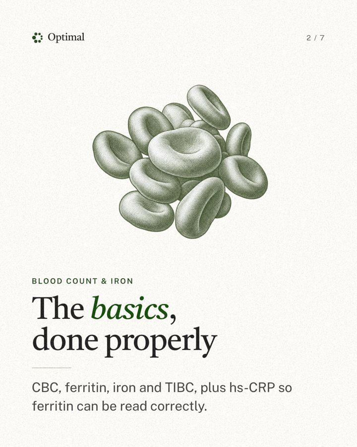
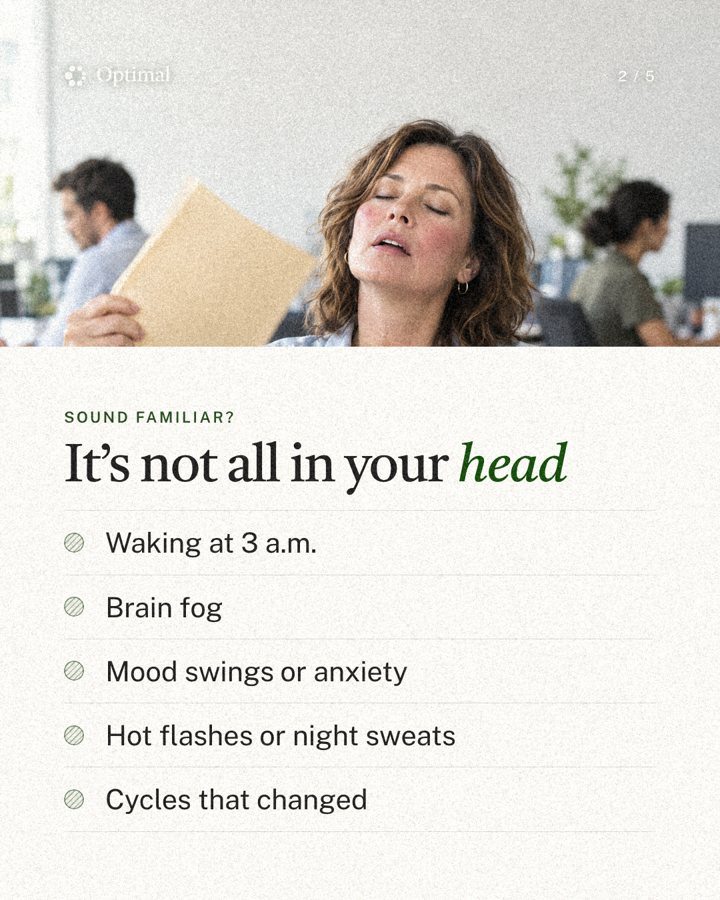
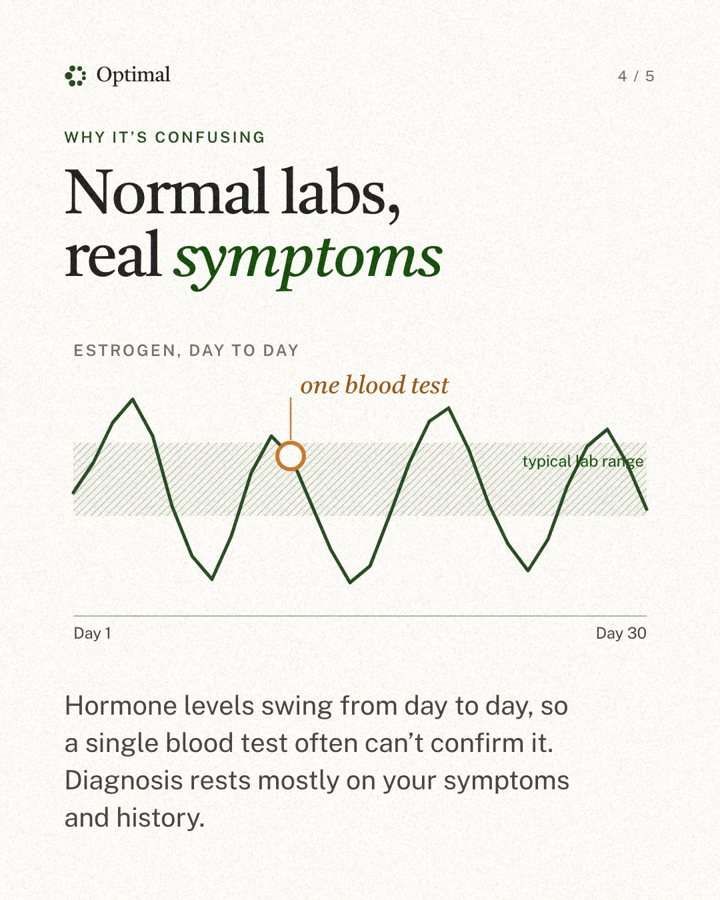

Frames. Posts are 1080×1350, and stories and reels 1080×1920. Keep 96px side margins on posts (the profile grid crops 4:5 to 3:4) and keep story content between y=250 and y=1580. Styles are in social.css.
Grounds. Use cream by default and sage for closing slides. Forest only goes behind cream-ink engravings. Text over photos sits in a forest capsule, never on a gradient. The ring accent goes on one word per headline, and an italic noun carries the emphasis.
Grain. Add mild monochrome grain at export (assets/textures/grain-1024.png), about 8/255 on photos and 6/255 on flat grounds. Never add grain to UI. This is a deliberate change to the original "no grain" rule (Oct 12, 2026), and it applies to social only.
Examples · @beoptimal.ca relaunch, Oct 2026





